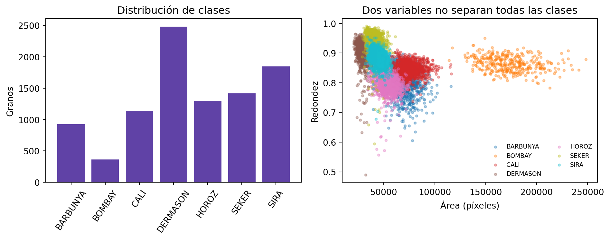

Problema: clasificar siete variedades registradas de fríjol seco a partir de medidas geométricas extraídas por un sistema de visión. Las variedades comparten rangos de tamaño y forma; estudiaremos qué cambia cuando una capa oculta introduce una representación no lineal.
3.1 Del clasificador afín a una red
En el capítulo anterior, nn.Linear aprendió una transformación afín. Cambiar el algoritmo de optimización puede encontrar otros parámetros, pero no cambia la familia de funciones que el modelo puede representar. Si las clases ocupan regiones curvas o dependen de interacciones entre variables, una única frontera lineal puede ser insuficiente.
El dataset Dry Bean parte de fotografías de granos ya segmentados. El sistema de visión calculó 16 medidas de tamaño y forma; nuestro modelo recibe esas medidas, no los píxeles originales. Por tanto, construiremos un clasificador de la etapa final de una tubería de visión, no un reconocedor de imágenes completo.
NotaObjetivos de aprendizaje
Al terminar este capítulo podrás:
demostrar por qué componer transformaciones afines no crea no linealidad;
explicar el papel de una capa oculta y de una función de activación;
distinguir logits, probabilidades, predicciones y entropía cruzada;
seguir las dimensiones del forward y del backward de una MLP;
verificar gradientes analíticos mediante autograd;
construir una red con tensores, nn.Module y nn.Sequential;
comparar una línea base mayoritaria, un clasificador lineal y una MLP bajo el mismo protocolo; y
diagnosticar errores multiclase mediante macro-F1 y matrices de confusión.
3.2 Preparar el entorno
from hashlib import sha256from pathlib import Pathfrom time import perf_counterfrom urllib.request import urlretrievefrom zipfile import ZipFileimport matplotlib.pyplot as pltimport numpy as npimport pandas as pdimport sklearnimport torchfrom sklearn.metrics import confusion_matrix, f1_scorefrom sklearn.model_selection import train_test_splitfrom torch import nnfrom torch.nn import functional as Ffrom torch.utils.data import DataLoader, TensorDatasetSEED =42torch.manual_seed(SEED)np.random.seed(SEED)torch.set_num_threads(1)torch.use_deterministic_algorithms(True)device = torch.device("cpu")print(f"PyTorch {torch.__version__} | NumPy {np.__version__} | "f"pandas {pd.__version__} | scikit-learn {sklearn.__version__}")print(f"Dispositivo: {device}")
El entrenamiento se realizará en CPU. El dataset es pequeño y esta decisión reduce diferencias entre CUDA, MPS y CPU. En problemas mayores, el mismo ciclo puede mover modelos y mini-batches a otro dispositivo.
3.3 Obtener y validar los datos
Dry Bean contiene 13.611 granos de siete variedades. Sus 16 variables fueron obtenidas después de segmentar imágenes con una cámara de alta resolución (Koklu y Ozkan 2020a, 2020b). El repositorio UCI distribuye los datos con licencia CC BY 4.0.
La descarga se guarda en caché y se valida mediante SHA-256. Leemos el archivo ARFF incluido en el ZIP sin añadir una dependencia para archivos de Excel.
DATA_URL = ("https://archive.ics.uci.edu/static/public/602/""dry+bean+dataset.zip")DATA_DIR = Path(".cache/chapter03")ARCHIVE_PATH = DATA_DIR /"dry-bean-dataset.zip"ARFF_NAME ="DryBeanDataset/Dry_Bean_Dataset.arff"EXPECTED_SHA256 = ("0a64eff5be87f48c3dbbfc0a12a56c5""d5b5167ef8e61cd45d69b3e7c7130c06f")FEATURE_NAMES = ["Area","Perimeter","MajorAxisLength","MinorAxisLength","AspectRatio","Eccentricity","ConvexArea","EquivDiameter","Extent","Solidity","Roundness","Compactness","ShapeFactor1","ShapeFactor2","ShapeFactor3","ShapeFactor4",]CLASS_NAMES = ["BARBUNYA","BOMBAY","CALI","DERMASON","HOROZ","SEKER","SIRA",]def load_dry_beans(): DATA_DIR.mkdir(parents=True, exist_ok=True)ifnot ARCHIVE_PATH.exists(): temporary_path = ARCHIVE_PATH.with_suffix(".download") urlretrieve(DATA_URL, temporary_path) temporary_path.replace(ARCHIVE_PATH) archive_hash = sha256(ARCHIVE_PATH.read_bytes()).hexdigest()if archive_hash != EXPECTED_SHA256:raiseValueError(f"SHA-256 inesperado: {archive_hash}")with ZipFile(ARCHIVE_PATH) as archive:if ARFF_NAME notin archive.namelist():raiseValueError(f"No se encontró {ARFF_NAME}")if archive.testzip() isnotNone:raiseValueError("El archivo descargado está corrupto")with archive.open(ARFF_NAME) as arff_file: frame = pd.read_csv( arff_file, skiprows=25, names=FEATURE_NAMES + ["Class"], )if frame.shape != (13_611, 17):raiseValueError(f"Dimensiones inesperadas: {frame.shape}")ifsorted(frame["Class"].unique()) != CLASS_NAMES:raiseValueError("Las etiquetas no coinciden con las siete esperadas")if frame.isna().any().any():raiseValueError("El dataset contiene valores faltantes inesperados")ifnot np.isfinite(frame[FEATURE_NAMES].to_numpy()).all():raiseValueError("Las características contienen valores no finitos")return framebeans = load_dry_beans()beans.head()
Area
Perimeter
MajorAxisLength
MinorAxisLength
AspectRatio
Eccentricity
ConvexArea
EquivDiameter
Extent
Solidity
Roundness
Compactness
ShapeFactor1
ShapeFactor2
ShapeFactor3
ShapeFactor4
Class
0
28395
610.291
208.178117
173.888747
1.197191
0.549812
28715
190.141097
0.763923
0.988856
0.958027
0.913358
0.007332
0.003147
0.834222
0.998724
SEKER
1
28734
638.018
200.524796
182.734419
1.097356
0.411785
29172
191.272750
0.783968
0.984986
0.887034
0.953861
0.006979
0.003564
0.909851
0.998430
SEKER
2
29380
624.110
212.826130
175.931143
1.209713
0.562727
29690
193.410904
0.778113
0.989559
0.947849
0.908774
0.007244
0.003048
0.825871
0.999066
SEKER
3
30008
645.884
210.557999
182.516516
1.153638
0.498616
30724
195.467062
0.782681
0.976696
0.903936
0.928329
0.007017
0.003215
0.861794
0.994199
SEKER
4
30140
620.134
201.847882
190.279279
1.060798
0.333680
30417
195.896503
0.773098
0.990893
0.984877
0.970516
0.006697
0.003665
0.941900
0.999166
SEKER
Cada fila representa un grano. Area y ConvexArea se expresan en píxeles; las demás variables incluyen longitudes, razones y factores de forma. El objetivo Class identifica una variedad registrada.
Existen 68 filas exactamente duplicadas. Si copias idénticas quedan en particiones diferentes, la evaluación puede premiar memorización. Conservamos una sola copia de cada perfil antes de dividir y documentamos que el análisis usa 13.543 perfiles únicos.
beans_unique = beans.drop_duplicates().reset_index(drop=True)assertlen(beans_unique) ==13_543assertnot beans_unique.duplicated().any()print(f"Perfiles únicos para modelar: {len(beans_unique):,}")
Perfiles únicos para modelar: 13,543
3.4 Crear y bloquear las particiones
No hay un orden temporal ni grupos de captura declarados. Usaremos una división aleatoria estratificada: 70% para entrenamiento, 15% para validación y 15% para test. La estratificación conserva aproximadamente la proporción de cada clase.
Desde este punto, test_frame permanecerá bloqueado hasta fijar la arquitectura, el presupuesto de entrenamiento y la comparación en validación.
3.5 Explorar únicamente entrenamiento
La clase mayoritaria es DERMASON; BOMBAY tiene muchas menos observaciones. Por eso reportaremos macro-F1 además de accuracy. Macro-F1 calcula F1 por clase y después asigna el mismo peso a cada variedad.
class_counts = train_frame["Class"].value_counts().reindex(CLASS_NAMES)fig, axes = plt.subplots(1, 2, figsize=(10, 4))axes[0].bar(class_counts.index, class_counts.values, color="#6042a6")axes[0].set_ylabel("Granos")axes[0].set_title("Distribución de clases")axes[0].tick_params(axis="x", rotation=55)colors = plt.cm.tab10(np.linspace(0, 1, len(CLASS_NAMES)))for class_name, color inzip(CLASS_NAMES, colors): class_rows = train_frame[train_frame["Class"] == class_name] axes[1].scatter( class_rows["Area"], class_rows["Roundness"], s=7, alpha=0.35, color=color, label=class_name, )axes[1].set_xlabel("Área (píxeles)")axes[1].set_ylabel("Redondez")axes[1].set_title("Dos variables no separan todas las clases")axes[1].legend(fontsize=7, ncol=2, frameon=False)fig.tight_layout()plt.show()

Figura 3.1: Frecuencia de clases y solapamiento de dos características en entrenamiento.
La proyección bidimensional no demuestra qué ocurre en las 16 dimensiones, pero hace visible el solapamiento. Además, las variables tienen escalas muy diferentes: Area puede tomar decenas de miles, mientras varios factores de forma están cerca de cero o uno.
3.6 Preparar tensores sin fuga de información
Ajustamos media y desviación exclusivamente con entrenamiento. El orden de las clases también queda fijado antes de modelar.
Máxima diferencia: 2.384185791015625e-07
Son equivalentes: True
3.8 ReLU crea nuevas regiones
Una función de activación rompe ese colapso. Para ReLU,
\[
\operatorname{ReLU}(z)=\max(0,z).
\]
Cada unidad puede activar una región y anular otra. Como ejemplo mínimo, ninguna recta separa XOR, pero dos activaciones ReLU construyen exactamente su patrón. Si \(s=x_1+x_2\),
Figura 3.2: XOR no es separable por una recta, pero una combinación de ReLU reproduce sus etiquetas.
Sigmoid, \(\sigma(z)=1/(1+e^{-z})\), también introduce no linealidad, pero se satura para valores de gran magnitud. Usaremos ReLU en la capa oculta. El capítulo siguiente estudiará cómo las activaciones afectan la estabilidad del entrenamiento.
3.9 Del vector de entrada a los logits
Nuestra MLP tendrá una capa oculta de 64 unidades:
example_logits = torch.tensor([[2.1, -0.3, 0.4, 1.2, -1.0, 0.7, 0.0]])example_probabilities = torch.softmax(example_logits, dim=1)print("Suma de probabilidades:", example_probabilities.sum(dim=1).item())print("Argmax de logits:", example_logits.argmax(dim=1).item())print("Argmax de probabilidades:", example_probabilities.argmax(dim=1).item())
Suma de probabilidades: 1.0000001192092896
Argmax de logits: 0
Argmax de probabilidades: 0
Softmax preserva el orden de los logits. Solo lo necesitaremos para interpretar predicciones; CrossEntropyLoss recibe logits directamente y aplica una forma numéricamente estable de log-softmax.
Para una observación cuya clase real es \(y_i\), la pérdida es
Etiquetas con forma (B,) y tipo int64 seleccionan la clase correcta sin crear vectores one-hot en la interfaz de PyTorch.
3.10 Hacer visible la retropropagación
Para un lote de tamaño \(B\), sea \(\mathbf{P}\) la matriz de probabilidades y \(\mathbf{Y}\) la codificación one-hot usada solo en la derivación. La combinación softmax-entropía cruzada produce
El producto \(\odot\) es elemento a elemento: la derivada local de ReLU bloquea el gradiente donde la preactivación fue negativa. Verificaremos estas expresiones con un mini-batch en float64.
Una subclase de nn.Module registra parámetros y define cómo se conectan:
class BeanMLP(nn.Module):def__init__(self, input_features=16, hidden_features=64, classes=7):super().__init__()self.hidden = nn.Linear(input_features, hidden_features)self.output = nn.Linear(hidden_features, classes)def forward(self, X):returnself.output(torch.relu(self.hidden(X)))module_example = BeanMLP()print(module_example)print("Forma de logits:", module_example(X_train[:32]).shape)
BeanMLP(
(hidden): Linear(in_features=16, out_features=64, bias=True)
(output): Linear(in_features=64, out_features=7, bias=True)
)
Forma de logits: torch.Size([32, 7])
Cuando el flujo es secuencial, nn.Sequential expresa la misma arquitectura con menos código:
def make_mlp(): torch.manual_seed(SEED)return nn.Sequential( nn.Linear(16, 64), nn.ReLU(), nn.Linear(64, 7), )mlp_example = make_mlp()parameter_count =sum(parameter.numel() for parameter in mlp_example.parameters())print("Parámetros registrados:", list(mlp_example.state_dict().keys()))print("Número de parámetros:", parameter_count)
Parámetros registrados: ['0.weight', '0.bias', '2.weight', '2.bias']
Número de parámetros: 1543
El conteo es
\[
(16\times64+64)+(64\times7+7)=1.543.
\]
Un clasificador lineal tiene solo \(16\times7+7=119\) parámetros. La MLP compra capacidad adicional con más parámetros y más operaciones.
3.12 Protocolo experimental
Compararemos tres modelos:
Mayoría: siempre predice la clase más frecuente de entrenamiento.
Lineal:Linear(16, 7), equivalente a regresión softmax.
MLP:Linear(16, 64), ReLU y Linear(64, 7).
Los dos modelos aprendidos usarán exactamente las mismas particiones, estandarización, mini-batches, entropía cruzada, SGD, tasa de aprendizaje 0,1, 40 épocas y semilla. No buscaremos optimizadores, regularización ni arquitecturas alternativas: esas decisiones pertenecen al Capítulo 4.
Esta es una comparación controlada con una sola semilla, no una estimación de variabilidad. Igualar tasa y número de actualizaciones controla el presupuesto, pero no demuestra que ambos modelos estén igualmente optimizados.
Figura 3.3: Evolución de la pérdida y de macro-F1 bajo el mismo presupuesto de entrenamiento.
Las curvas sirven para comprobar que ambos modelos aprenden bajo el protocolo fijado. No escogeremos una época observando el máximo de validación: comparamos el estado final de la época 40 definido antes de abrir test.
La línea base mayoritaria acierta una fracción apreciable por el desbalance, pero su macro-F1 revela que abandona seis clases. El clasificador lineal ya resuelve gran parte del problema. La MLP obtiene una ventaja muy pequeña en validación: la capacidad adicional no transforma radicalmente el resultado.
Identificamos en validación el par de variedades con mayor confusión mutua. Esta decisión se toma antes de consultar test.
El test no confirma la pequeña ventaja observada en validación: el modelo lineal obtiene un macro-F1 ligeramente mayor. En esta ejecución no observamos una ventaja de generalización para la capacidad adicional, pese a que la MLP reduce más la pérdida de entrenamiento. No atribuimos una diferencia tan pequeña exclusivamente a la arquitectura; para ello necesitaríamos repetir semillas y particiones. El resultado también debe interpretarse junto con el aumento de 119 a 1.543 parámetros.
3.16 Diagnosticar errores por clase
Una métrica agregada no muestra qué variedades concentran los errores. Normalizamos cada fila de la matriz de confusión para leerla como proporción de la clase real.
Finalmente inspeccionamos errores del par fijado en validación. La confianza es la mayor probabilidad softmax y el margen es la diferencia entre las dos probabilidades principales. No interpretamos confianza como calibración: eso requeriría otro protocolo.
mlp_test_probabilities = torch.softmax(test_logits["MLP"], dim=1)top_probabilities, top_indices = mlp_test_probabilities.topk(2, dim=1)pair_index_set = {class_to_index[name] for name in confused_pair}error_mask = np.array([ true_index in pair_index_setand predicted_index in pair_index_setand true_index != predicted_indexfor true_index, predicted_index inzip(y_test.numpy(), test_predictions["MLP"])])error_positions = np.flatnonzero(error_mask)error_positions = error_positions[ np.argsort(top_probabilities[error_positions, 0].numpy())[::-1]][:8]error_examples = pd.DataFrame({"clase real": [CLASS_NAMES[index] for index in y_test[error_positions]],"predicción": [ CLASS_NAMES[index] for index in test_predictions["MLP"][error_positions] ],"confianza": top_probabilities[error_positions, 0].numpy(),"margen": ( top_probabilities[error_positions, 0]- top_probabilities[error_positions, 1] ).numpy(),"Area": test_frame.loc[error_positions, "Area"].to_numpy(),"Roundness": test_frame.loc[error_positions, "Roundness"].to_numpy(),})error_examples
clase real
predicción
confianza
margen
Area
Roundness
0
SIRA
DERMASON
0.982392
0.965483
33605
0.894242
1
SIRA
DERMASON
0.981167
0.963326
33739
0.898569
2
SIRA
DERMASON
0.980890
0.963263
35827
0.908969
3
SIRA
DERMASON
0.961153
0.932133
34892
0.868974
4
SIRA
DERMASON
0.951148
0.903733
33493
0.900956
5
SIRA
DERMASON
0.948204
0.899083
35215
0.874601
6
SIRA
DERMASON
0.947883
0.897723
35129
0.892591
7
SIRA
DERMASON
0.941858
0.887270
36007
0.909022
Los errores con margen alto son especialmente importantes: el modelo no solo se equivoca, sino que asigna una probabilidad softmax mucho mayor a la clase incorrecta. Este margen depende de la escala de los logits y no mide distancia geométrica a una frontera. Una revisión real debería recuperar las imágenes originales y auditar segmentación, iluminación y etiquetas; esas evidencias no están incluidas en este dataset tabular.
Esta auditoría cierra el test para el experimento actual. Si sus errores motivan cambios en variables, arquitectura o entrenamiento, la siguiente iteración necesitará un nuevo holdout o un protocolo anidado; no sería válido presentar de nuevo este mismo test como una evaluación independiente.
3.17 Qué aporta y qué no aporta la no linealidad
La capa oculta permite combinar variables en regiones lineales por partes. Esa capacidad explica por qué una MLP puede superar una frontera afín, pero no garantiza que:
el optimizador encuentre buenos parámetros;
más capas o unidades siempre mejoren;
las probabilidades estén calibradas;
el modelo generalice a otra cámara, iluminación, cosecha o país;
una de las siete clases sea adecuada para una variedad desconocida; ni
las asociaciones aprendidas tengan interpretación causal.
La división aleatoria evalúa nuevas observaciones del mismo dominio. Además, el modelo depende de una segmentación y extracción de características previas. El Capítulo 5 retomará imágenes para estudiar qué aporta una arquitectura que conserva estructura espacial.
ImportanteFrontera con el próximo capítulo
Aquí aislamos qué puede representar una MLP y cómo fluye su gradiente. El Capítulo 4 estudiará por qué una red puede divergir, aprender lentamente o sobreajustar, comparando inicialización, optimizadores, normalización, regularización y varias semillas.
3.18 Qué hemos aprendido
Una composición de transformaciones afines sigue siendo afín.
ReLU introduce regiones y permite representar relaciones como XOR.
Una MLP transforma entradas en representaciones ocultas y después en logits.
Softmax convierte logits en probabilidades, pero no debe aplicarse antes de CrossEntropyLoss.
Backpropagation combina productos matriciales, derivadas locales y la regla de la cadena.
Autograd coincide con los gradientes analíticos cuando el grafo representa la misma función.
Accuracy debe acompañarse de métricas por clase cuando hay desbalance.
En Dry Bean, la ligera ventaja de la MLP en validación no se sostiene en test; más capacidad no implica automáticamente mejor generalización.
3.19 Ejercicios
Demuestra que tres capas afines sin activación equivalen a una sola y compruébalo con tensores de dimensiones elegidas por ti.
Implementa BeanMLP usando nn.Parameter y operaciones matriciales, sin nn.Linear. Compara el número y las formas de sus parámetros.
Cambia ReLU por sigmoid manteniendo fijo todo el protocolo. Describe el resultado sin buscar una nueva tasa de aprendizaje.
Implementa softmax estable restando el máximo logit de cada fila y comprueba que coincide con torch.softmax.
Calcula accuracy, precisión, recall y macro-F1 desde la matriz de confusión, sin usar funciones de scikit-learn.
Explica por qué la línea base mayoritaria puede tener accuracy mayor que cero y recall cero en seis clases.
Calcula el número de parámetros para anchos ocultos 8, 32, 128 y 512 sin entrenarlos. ¿Cómo crece el costo respecto al ancho?
Repite la comprobación de gradientes cuando todas las preactivaciones de una unidad ReLU son negativas. Explica el resultado.
Identifica en validación las observaciones con menor margen y formula una hipótesis sobre su ambigüedad geométrica.
Diseña validaciones para rechazar una entrada con valores faltantes, infinitos o muy alejados de los rangos de entrenamiento.
3.20 Reto
Una softmax cerrada siempre asigna una de las siete variedades, incluso si recibe un grano de una clase desconocida. Construye entradas fuera de los rangos observados, registra la clase y confianza asignadas por la MLP y explica por qué una confianza baja no constituye por sí sola un detector confiable de novedad. Propón datos, métricas y un protocolo que sí permitirían evaluar rechazo de clases desconocidas.
Koklu, Murat, y Ilker Ali Ozkan. 2020b. «Multiclass classification of dry beans using computer vision and machine learning techniques». Computers and Electronics in Agriculture 174: 105507. https://doi.org/10.1016/j.compag.2020.105507.